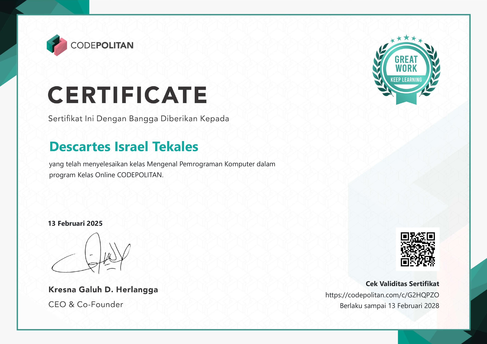
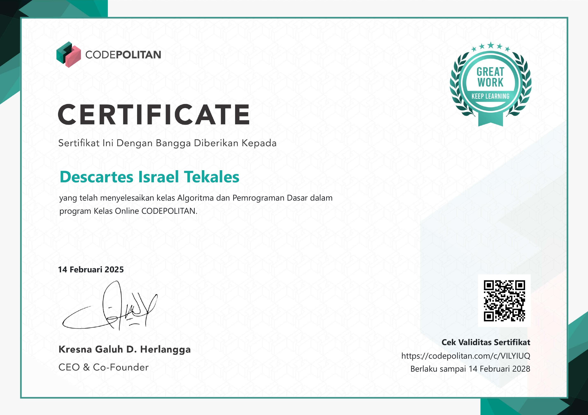
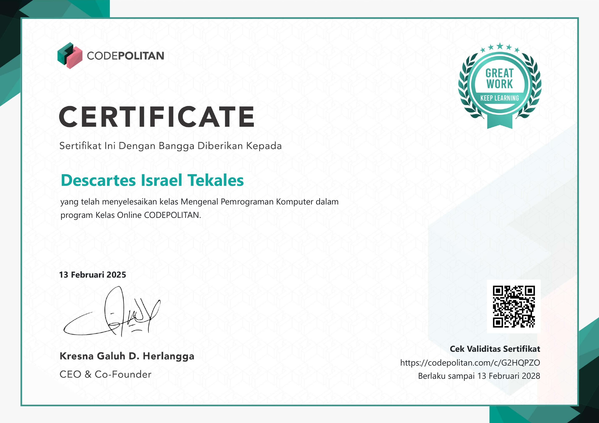
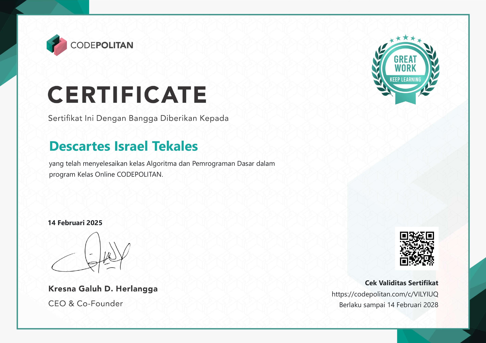

Descartes Tekales
Penjelasan Website Ini
Ini adalah sebuah website tentang portofolio Descartes Tekales.
Descartes Tekales adalah seorang mahasiswa yang sedang belajar
tentang pemrograman.
Saya belajar melalui berbagai macam platform pembelajaran online.
Mulai dari YouTube, Instagram, Tiktok, dan lain-lain, bahkan saya
belajar melalui buku juga.
Website ini dibuat untuk menunjukkan hasil belajar saya. Kedepannya
website ini akan saya campur tangan dengan JavaScript, dan akan saya
tambahkan beberapa fitur yang menarik.
 <<<<<<< HEAD


=======
>>>>>>> e84dba7f628bd4f6a14ea52d6450c41704fbe9b2
<<<<<<< HEAD


=======
>>>>>>> e84dba7f628bd4f6a14ea52d6450c41704fbe9b2